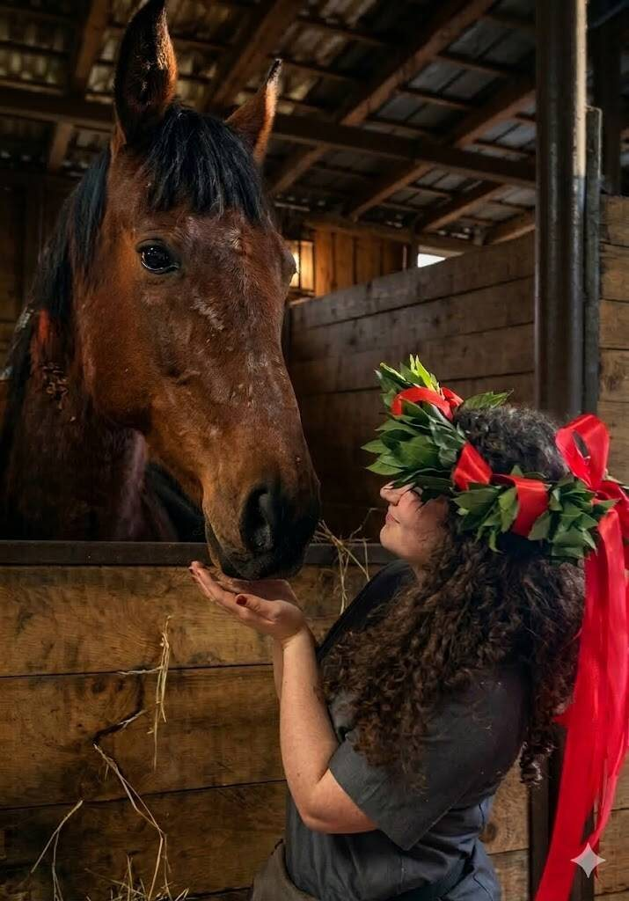

Chi sono
Dott.ssa Veronica Pirro
Addestratrice e tecnico comportamentale, fondatrice di VHT Horse Training.
Il suo lavoro unisce competenza scientifica, osservazione del comportamento equino e applicazione pratica dei principi dell’apprendimento, con un obiettivo preciso: aiutare cavalli e persone a capirsi meglio.

Formazione
Una base scientifica applicata al lavoro quotidiano
Dott.ssa Veronica Pirro è laureata in Allevamento e Benessere degli Animali d’Affezione presso UniMi.
La sua attività nasce dall’esigenza di portare in campo un approccio più consapevole: osservare il cavallo, leggere il comportamento, considerare il contesto e proporre percorsi coerenti con il benessere dell’animale.
VHT Horse Training non propone uno schema “rapido” o standardizzato: ogni percorso viene costruito sul singolo cavallo, integrando tecnica, gradualità e rispetto della sua individualità.
La visione VHT
Dott.ssa Veronica Pirro crede in un addestramento che non si basi su paura, coercizione o strumenti invasivi, ma su chiarezza, motivazione, ascolto e collaborazione.
Ogni cavallo porta con sé una storia: esperienze, sensibilità, limiti, risorse e bisogni. Per questo ogni percorso deve essere costruito sulla situazione reale: è il programma ad adattarsi al soggetto, non il cavallo a rientrare in uno stampino già deciso.
Direzione professionale
Dal problema visibile alla comprensione del contesto
Un comportamento difficile non viene letto come un’etichetta, ma come un’informazione. L’obiettivo è aiutare proprietari e centri ippici a individuare una direzione di lavoro chiara, rispettosa e realistica.
Primo contatto
Vuoi raccontare la tua situazione a Dott.ssa Veronica Pirro?
Scrivi su WhatsApp indicando zona, cavallo, difficoltà principale e obiettivo. Il primo passaggio è capire se serve una consulenza, una sessione pratica o un percorso più strutturato.